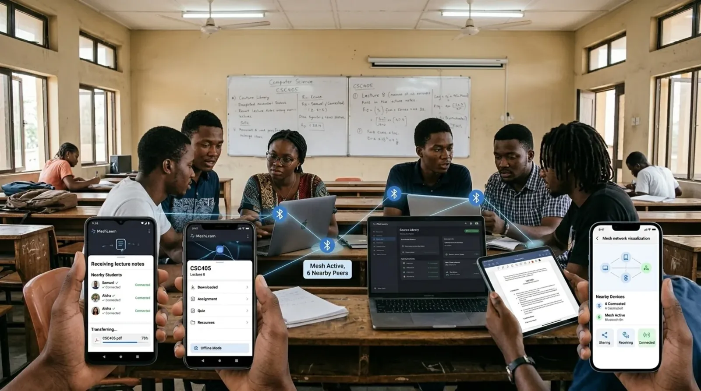
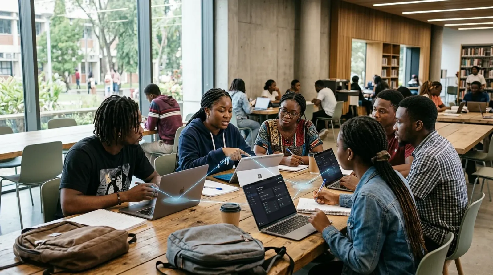
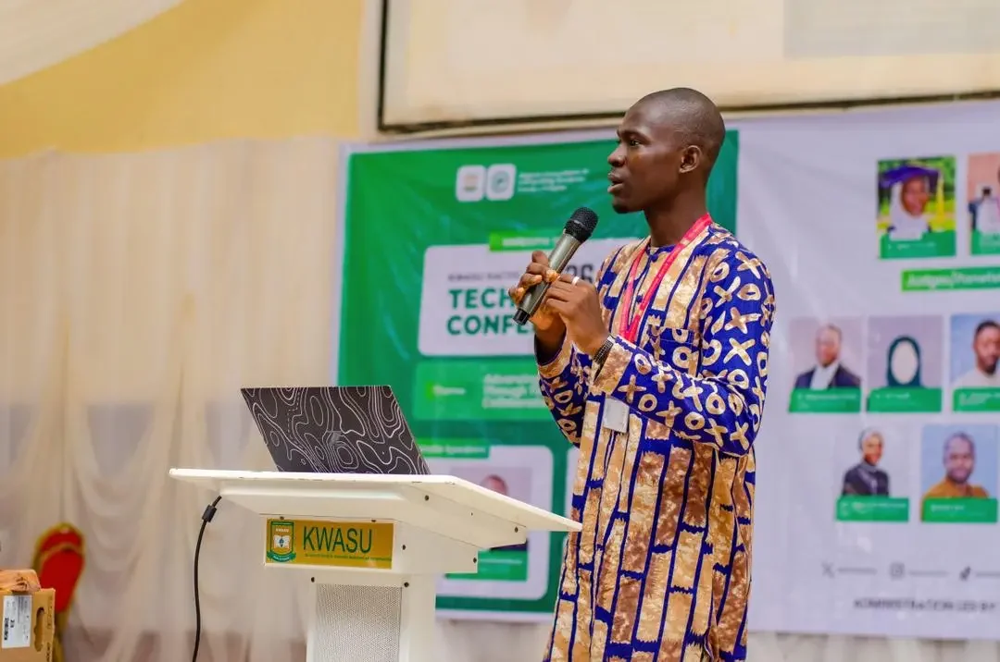
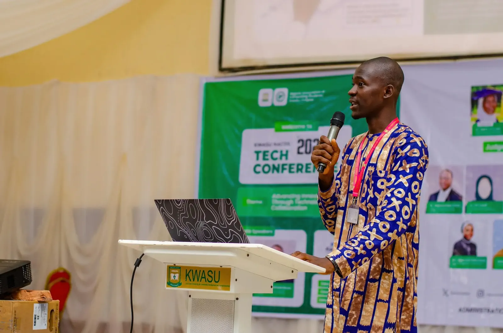

Education
Founder
Beta
2025
MeshLearn
A decentralized offline learning platform that uses Bluetooth Low Energy mesh networking to keep coursework moving even when there is no internet connection at all.
A decentralized offline learning platform that uses Bluetooth Low Energy mesh networking to keep coursework moving even when there is no internet connection at all.

Nigeria has over 200 universities and polytechnics. A significant percentage of students studying outside major cities have unreliable or prohibitively expensive internet access. During my own studies at KWASU, I watched classmates struggle to download lecture materials, submit assignments, or access e-learning portals not because the content wasn't there, but because the infrastructure wasn't.
The existing solutions downloaded PDFs, WhatsApp groups, USB drives passed around were fragile, unsearchable, and impossible to track for progress.
I investigated how students naturally shared information and found that physical proximity was the strongest network they had. We needed a system that leveraged this proximity. The opportunity was clear: Can learning continue without the internet by utilizing device-to-device connections?
The hardest challenge was ensuring that progress tracking and content updates synchronized correctly when a device reconnected to the internet, without overwriting newer offline progress. We had to build a robust conflict-resolution layer on top of a decentralized local mesh.
As the founder and full-stack engineer, I built the entire platform end-to-end. I developed the React Native application, implemented the BLE mesh networking logic, and trained the TensorFlow Lite recommendation model.
MeshLearn uses Bluetooth Low Energy (BLE) to create a peer-to-peer content distribution network. When one device downloads content, it automatically becomes a node that serves that content to other nearby devices.
flowchart LR
A[Student] -->|Requests Material| B(BLE Mesh)
B -->|Finds Peer| C(Nearby Node)
C -->|Transfers| D(Chunk Verification)
D -->|Saves| E(SQLite)
E -->|Internet Restored| F(Sync Server)
Content propagates across the mesh in chunks, verified by hash, so corrupted or incomplete chunks are automatically requested from another peer.
The interface was designed to feel like a modern, premium learning platform, despite operating entirely offline. I focused on making the "mesh status" visible and understandable, so students could see when they were connected to peers and actively sharing or receiving chunks.

The platform required a complex mix of mobile engineering, native module integration, and on-device machine learning:
MeshLearn was recognized as the Runner-Up at the KWASU Tech Conference Hackathon 2026. It is currently in closed beta with a cohort of students, successfully demonstrating that a single connected device can bootstrap an entire classroom of learners.


MeshLearn was my first serious encounter with the constraints of mobile hardware. BLE is finicky Bluetooth stacks vary wildly across Android manufacturers, power management kills background processes unexpectedly, and the mesh topology needs to adapt dynamically as users move around.
It also taught me that the user experience of "it just works offline" is an extraordinarily hard engineering problem. Every assumption you make about connectivity, state synchronization, and data freshness has to be revisited from scratch.
Looking for institutional partners, investors, and NGOs interested in offline-first EdTech in Africa.
Last updated